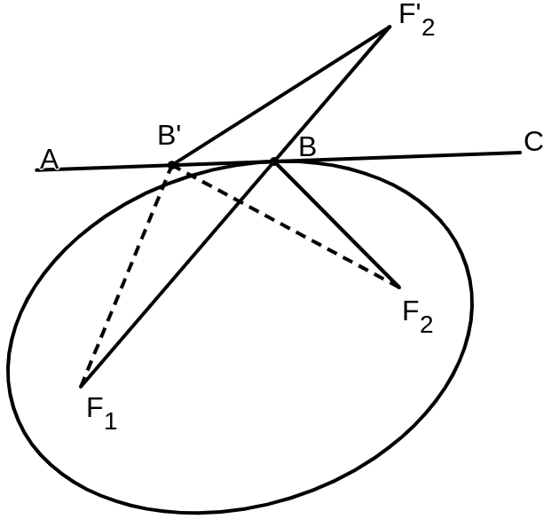

Optical Demonstrations
March 2023
This post is the result of my researches during the summer of 2022. The write-up has been figuratively collecting dust in the corners of my computer for a while and its past time I finally cleaned it up and published it.
Geometrical optics maybe one of the most delightful branches of study one encounters while only having an elementary mathematical education. With a very small number of axioms and some knowledge of geometry it is possible to deduce a great number theorems regarding the motion and propagation of light. This article is my personal attempt at deriving those propositions which pertain to mirrors, lenses, and refraction by only assuming Fermat's principle of least time.
Axiom (Speed of Light). Light has a nonzero finite speed which is different depending on its medium of travel.
Axiom (Principle of Least Time). The path taken by light between points A and B is the path that is traveled in the least time.
Assuming that light travels in rays, then we can deduce that in a uniform medium, light travels in straight lines. Let $\varphi$ be the length of the path taken by the light ray from $A$ to $B$ and $\nu$ be the velocity of light in the medium, this being uniform across the path. Hence the time, as a function of the path length, is $\frac{\varphi}{\nu}$. Since $\nu$ is constant, then the minimum travel time is achieved when the path length is smallest. And since we are working in a Euclidean space, the path of least length between two points is a straight line. Therefore, in a uniform medium, light travels in a straight line.
A question that naturally comes to mind at this moment is the path of light traversing the boundary between two mediums. We know that if the velocity is the same in both then light travels in straight lines, however what if these media have differing velocities?
Consider two media, with velocities $v_1$ and $v_2$ respectively, separated by the line $l$. Inside the medium on the top, light takes the path $AB$; and on the bottom it takes the path $BC$. By the previous corollary, we know that $AB$ and $BC$ are straight lines, however we do not know any specifics about the path $ABC$. We may begin to gain some understanding when we have successfully found the path of least time
Theorem (Snell's Law). When light traverses the boundary of two media, the ratio of the sines of the angle of incidence, $\theta_1$, and the angle of refraction, $\theta_2$, is equal to the ratio of the velocities of the two media. In other words $v_2\sin\theta_1 = v_1\sin\theta_2$

Proof. Let $x = AD$ and $a = AC'$, where $C'$ is the image of $C$ on the line $AD$. The total time that light takes to travel $ABC$ is $T = \frac{AB}{v_1} + \frac{BC}{v_2}$. We can use $x$ and $a$ to calculate the lengths of $AB$ and $BC$: $$ \begin{align*} \frac{AB}{v_1} &= \frac{\sqrt{x^2 + DB^2}}{v_1} \\ \frac{BC}{v_2} &= \frac{\sqrt{(a-x)^2 + BE^2}}{v_2} \end{align*} $$ We may now rewrite our expression for $T$ in terms of $x$ and $a$: $$ T = \frac{\sqrt{x^2 + DB^2}}{v_1} + \frac{\sqrt{(a-x)^2 + BE^2}}{v_2} $$ Now to minimize $T$, we may simple solve the equation $T' = 0$. $$ \frac{dT}{dx}=\frac{x}{v_1\sqrt{x^2+DB^2}}- \frac{a-x}{v_2\sqrt{(a-x)^2+BE^2}} = 0 \\ $$ Notice that, since $x = AD$ and $a-x = CE$, then $\frac{x}{\sqrt{x^2+DB^2}}$ is equal to $\frac{AD}{AB} = \sin\theta_1$. Similarly, $\frac{a-x}{\sqrt{(a-x)^2+BE^2}} = \sin\theta_2$. Rewriting the expression for $T'$ with these considerations results in $\frac{\sin\theta_1}{v_1} = \frac{\sin\theta_2}{v_2}$. Hence we may deduce that $v_2\sin\theta_1 = v_1\sin\theta_2$.
This principle, known as Snell's Law or the Law of Refraction is experimentally verified every single day. For instance, when a straw is inserted in a cup of water, we can observe the difference between the angle of incidence and the angle of refraction. Hence the speed of light differs in water than in air or a vacuum. The blurry images seen above hot objects is also a consequence of this principle, since the speed of light is different in the pockets of hot and cool air that circulate around and above hot objects.
Mirrors and Reflection
When talking about reflection on mirrors, the first example that comes to mind is a simple flat mirror. Intuitively, they remind the mind of the notion of symmetry, and so it seems obvious that the angle of incidence is equal to the angle of reflection.
Theorem (Reflection on a Flat Mirror). When a ray of light is reflected by a flat mirror, the angle of incidence is equal to the angle of reflection.

Proof 1. When $m$ is a mirror, let $A$ and $C$ be points on a line parallel to $m$. Light is shone from $A$ onto the mirror at point $B$ whence it is reflected towards the point $C$. Since the path of light is contained in a medium with uniform velocity, the path is that which has the minimum length. Since all values are positive, the minimum of $AB + BC$ is achieved at the same values as the minimum of $AB^2 + BC^2$. Let $x = AD$. Hence $AB^2 + BC^2 = x^2 + BD^2 + (AB - x)^2 + BD^2$. Therefore the minimum value of $T$ is achieved when $\frac{d}{dx}$ $AB^2+BC^2 = 4x - 2AC = 0$. Therefore $2x = AC$. This implies that the triangles $ABD$ and $CBD$ are congruent, and hence $\angle ABD = \angle CBD$.

Proof 2. The construction is as before. We assume that $AD = CD$. Let $B'$ be some other point on $m$ and $D'$ its mirror on $AC$. Therefore $AD' \neq CD'$. So we need to show that for all $B'$ on $m$, $B'A^2 + B'C^2 > DA^2 + DC^2$. Let $h = BD$. Then $B'A^2 + B'C^2 = 2h^2 + D'A^2 + D'C^2$ and $BA^2 + BC^2 = 2h^2 + DA^2 + DC^2$. $$ \begin{align*} B'A^2 + B'C^2 &> DA^2 + DC^2 \\ 2h^2 + D'A^2 + D'C^2 &> 2h^2 + DA^2 + DC^2 \\ D'A^2 + D'C^2 &> 2DA^2 \end{align*} $$ What this means algebraically is that $2x^2$ is smaller than $a^2 + b^2$ for all $a, b$ such that $a + b = 2x$. Proving this is quite easy, Observe that $a + b = (x-y) + (x+y)$, hence $a^2 + b^2 = (x-y)^2 + (x+y)^2$. Since this is equal to $2x^2 + 2y^2$, then it is clear than $2x^2 \lt a^2 + b^2$. And as such $D'A^2 + D'C^2 > 2DA^2$.
Proof 3. I have been saving the best for last! Refer back to the first construction, notice that $BD$ may act as a boundary between two media with equal speeds of light. However since light cannot continue its straight path at $AB$, it must bend. By Snell's law, we may deduce that $\sin\angle ABD = \sin\angle CBD$. As the domain of the sine in this problem is between $0^\circ$ and $90^\circ$, then $\angle ABD = \angle CBD$.
Most of us, at some point in our lives have looked inside a shiny metal spoon. Some may have even noted how the image appears upside down. The front of a spoon is an example of a concave mirror and the back of a spoon is an example of a convex mirror. Here we'll prove some propositions regarding the reflection of light in such mirrors. Most such mirrors are created in the shape of conic sections. The convex mirrors found in public parkings, for instance, are usually parabolas. It is required that we give some demonstrations regarding conics to ease our entry into their optics.
Definition. An ellipse is a curve with two foci such that, given any point on the curve, the sum of the distances between it and the two foci is constant.
Lemma. The focal radii of an ellipse create equal angles with the tangent at the point of contact.

Proof. Let $F_1$ and $F_2$ be the two foci of our ellipse and B be the point of tangency. Reflect $F_2$ with respect to the tangent $AC$ and name it $F_2'$. Hence $\angle F_2'BC = \angle F_2BC$. Notice that if $F_1BF_2'$ were a straight line, then $\angle ABF_1 = \angle F_2'BC = \angle F_2CB$. So all we need to show is that $F_2'$, $B$, and $F_1$ are collinear. Let $B'$ be some point on $AC$. We know that $F_1B' + F_2'B'$ = $F_1B' + F_2B'$. And as such the minimum sum of the focal radii is the same as the minimum of $F_1B' + F_2'B'$. Notice again that since $B$ is the only common point between the tangent and the ellipse, then $F_1B + F_2B$ is the minimum value of $F_1B' + F_2B'$. The minimum value of $F_1B' + F_2'B'$ is achieved when $F_1$, $B'$, and $F_2'$ are collinear. Since we know these two minimums to be one and the same, then $F_1BF_2'$ is a straight line.
We may obtain a parabola by sending one of the foci of an ellipse to infinity.
Definition. Given an ellipse with foci $F_1$ and $F_2$, we may obtain a parabola by letting $F_1F_2$ approach infinity.
A more common (synthetic) definition for a parabola is a curve with a focus $F$ such that for any point $P$ on the curve, $PF + PL$ is contant where $PL$ is the shortest distance from $P$ to the directrix (a perpendicular to the axis of the parabola). However the definition given above is much more convenient for the purposes of this article as it retains all the properties of an ellipse.
The previous lemma might have sparked some inspiration in the mind of the careful reader, it involved both the reflection of a straight line upon a flat surface and also the minimization of a path, which are the only means of demonstrating optical phenomena available to us. So it should be of no surprise that our next theorem is about the reflection of light in elliptic mirrors.
Theorem (Reflection on an Elliptical Mirror). If a ray of light be shone on an elliptical mirror from one of its foci, it will be reflected onto the other focus.
Proof. Refer to the figure from the lemma. Light is shone from the focus $F_1$ onto $B$, and since the angle of incidence and the angle of reflection are equal, then $F_2$ lies on the reflected ray.
Theorem (Reflection on a Parabolic Mirror). If a ray of light which is parallel to the major axis be shone on a parabolic mirror, it will be reflected onto the focus of the parabola.

Proof. We conveniently defined a parabola by means of a limiting process on an ellipse. Such that a parabola is achieved when we let $F_1F_2$ approach infinity. Notice that in such a scenario, $PF_2$ would be parallel to $F_1F_2$. This is because $\angle F_2PP'$ = $\arcsin\frac{P'F_2}{PF_2}$. And as such, in a parabola, $\angle F_2PP'$ is equal to $\lim_{F_1F_2\to\infty} \arcsin\frac{P'F_2}{PF_2}$. Let $x = P'F_2$ and $a = P'P$. Then we can easily evaluate the limit: $$ \begin{align*} \lim_{x\to\infty} \arcsin\frac{x}{\sqrt{x^2 + a^2}} &= \lim_{x\to\infty} \arcsin\sqrt{1 + \frac{a^2}{x^2}} \\ &= \arcsin(1) = 90^\circ \end{align*} $$ As $\angle F_2PP'$ is a right angle, then, in a parabola, $F_2P$ is parallel to the major axis. Consequently any line parallel to $F_1F_2$ is essentially coming from $F_2$. And so, by using the previous theorem, we can deduce that any ray of light parallel to the major axis of the parabola will be reflected towards the focus, $F_1$, of the parabola. Which is what we wanted to show.
So far we have discussed the direction of light after its reflection by a mirror. We, however, have not discussed how images would appear after being reflected by mirrors. In short, we have the dynamics of light figured out, but we have left the kinematics untouched. I intend to fix this lack sometime in the near future.